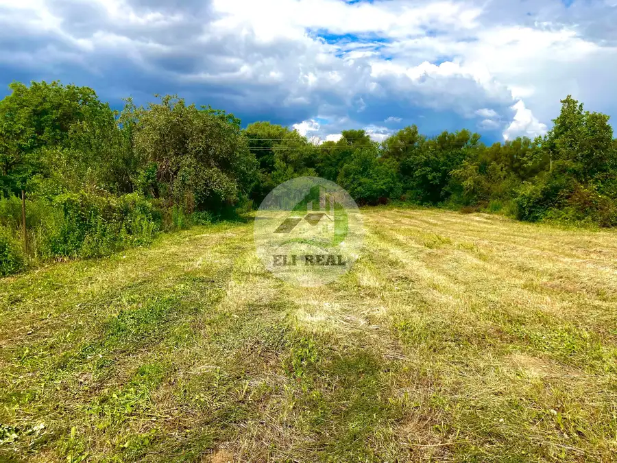

Na predaj pozemok v obci Nižná Myšľa – len 12 km od Košíc
Nižná Myšľa



- Plocha823 m²
- VlastníctvoOsobné
O nehnuteľnosti
Lucia Balteszová z realitnej kancelárie ELI REAL Vám ponúka na predaj rovinatý pozemok ideálny na výstavbu vášho nového rodinného domu v obci Nižná Myšľa.Základné informácie o pozemku:• Celková výmera: 823 m²• Prístupová cesta: Podiel na prístupovej ceste o rozlohe 445 m² (šírka prístupu je komfortných 5,5 m)• Terén: Rovinatý a slnečnýÚzemný plán: Podľa platného územného plánu obce je pozemok určený na rezidenčnú výstavbu Lokalita a občianska vybavenosť:Obec Nižná Myšľa spája pokojné vidiecke bývanie s výbornou dostupnosťou do krajského mesta Košice (iba 12 km). Obec disponuje kompletnou občianskou vybavenosťou:• Predajňa potravín• Pošta• Posilňovňa• Služby (kaderníctvo, pedikúra)• Vlaková zastávka (rýchle spojenie bez ranných zápch)Cena a právny servis:V cene nehnuteľnosti je zahrnutý kompletný právny servis, vypracovanie kúpnych zmlúv a všetky poplatky spojené s prevodom vlastníckych práv na katastri.Ak vás táto ponuka zaujala, rada vás privítam na osobnej obhliadke.Kontakt:Lucia BalteszováTel. číslo: 0915 251 522E-mail: balteszova@elireal.sk
Parametre
- Druh
- Pozemok pre rodinné domy
- Dátum zverejnenia
- 02. 06. 2025
- Elektrina
- Pri pozemku - 230 V
- Odpadové vody
- Pri pozemku - Kanalizácia
- Plocha pozemku
- 823 m²
- Plyn
- Pri pozemku
- Pripravenosť k výstavbe
- Schválené v územnom pláne
- Terén pozemku
- Rovinatý
- Typ
- Predaj
- Vlastníctvo
- Osobné
- Voda
- Pri pozemku - Verejný vodovod